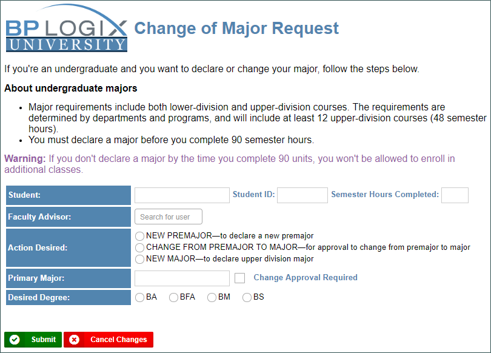
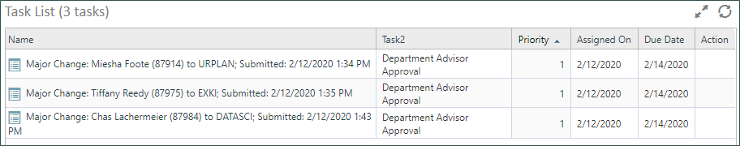
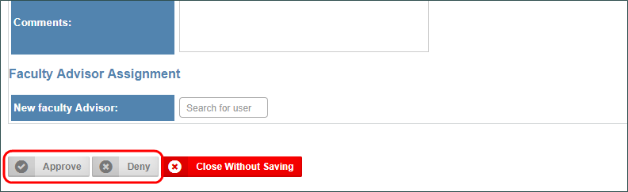
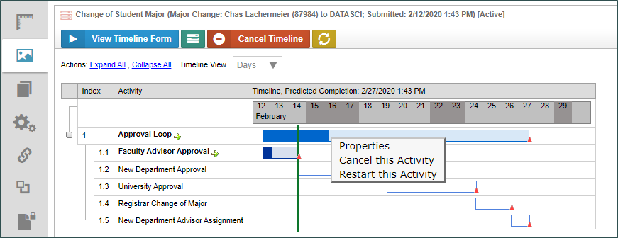

|
|
Lesson Contents | In this lesson, we will take a look at the sample application for this course, and the objects that make the application work. |
Before we begin the process of actually creating the sample application for this course, we will review a finished version of the application to preview what we will build in the course of this training. Process Director uses a number of objects to deliver intelligent applications that increase the efficiency, transparency, accountability, and—of course—security of your processes. In this demonstration, we’ll use some of those objects to create an application that meets a common Higher education challenge, approving a Change of Major request. We’ll review the request Form, Process Timeline, and the Business Rules that govern how the approval process works. In later lessons, we will go through the entire process of creating the application in detail, but, for now, it’s important to remember that everything we’ll see in this demonstration was done through the Process Director interface. We didn't need to write any code at all to create this application.
Forms serve as the container for the data that is used in your process. Forms can enable users to input information, present information collected from other sources, determine what users might see at different stages of the process, and much more. Each Form consists of a number of Process Director controls. A control is a user interface object, like a button or text box, that enables you to interact with a Form. Controls are central to the operation of the Form, because controls enable users to enter or edit information. Many controls, such as text input fields or check boxes, may already be familiar to you. Most users will primarily interact with process Director by filling out and submitting or approving forms. Our sample form has the appropriate form fields to gather information about the student, the desired major change they student is requesting, and the appropriate approval fields.

Once we've filled out all the data, submitting the form immediately starts the approval process. The first task is assigned to the student's faculty advisor, Diana, and when she logs into Process Director, she sees a task in her task list that notifies her that she needs to review the Change of Major request.

When she selects the task that's been assigned to her , the form opens automatically so that she can review it, and determine whether to approve or deny it.

Every user will, similarly, be presented with their assigned tasks as the request makes its way through the approval process.
Based on the information saved in the form, the actual process for approving this change may take different paths. For instance, some majors require department approval for the change request. In that case, a faculty advisor from the requested department must also approve then change request. For students who have more than 150 semester hours, a representative from the Dean's office must approve the request. If neither of these conditions apply, then these steps will be skipped.
This conditional process task assignment also highlights one of the key benefits of Intelligent Automation. The system can automatically determine what steps the approval process must take, eliminating the need for human intervention to determine who must participate in the approval process. The necessary approvers for each request are automatically assigned tasks and notified of their assignment at the proper time, in the required order. The only required human intervention in this process is making the actual approval decisions. The Intelligent Automation Platform instantly makes the appropriate routing decisions and notifications for everything else.
Once the request has been approved, it goes to an representative in the registrar's office who will make the change and assign a new faculty advisor to the student. Once this is done, our process is complete.
As a process administrator, you can view the running process from the content list. Any user with the appropriate permissions can view the properties of each task, and perform any needed administrative tasks, such as changing the task assignment, or adding an additional user. They can restart tasks, or even cancel the entire process, if needed.

Once the Process is complete, a suitably authorized process owner can, once again, access the process instance from the Content list. She can review the actual performance of the process, compared with the predicted performance. As before, she can perform administrative tasks like restarting the process, or restarting from a specific step.
At this point, though, our sample process is complete, so let’s recap what we did. Using only the Process Director interface, we were able to completely finish a change of major request using an entirely automated system. The system applied appropriate business rules to ensure that the correct people were included in the process. We didn't rely on anyone having to hand-carry a piece of paper to different offices. All task participants were automatically assigned tasks and notified that they had actions to perform. The entire process was automated, simple, and efficient.
This ease of use makes Process Director a powerful tool that provides the fastest possible time to value, and that delivers immediate benefits.